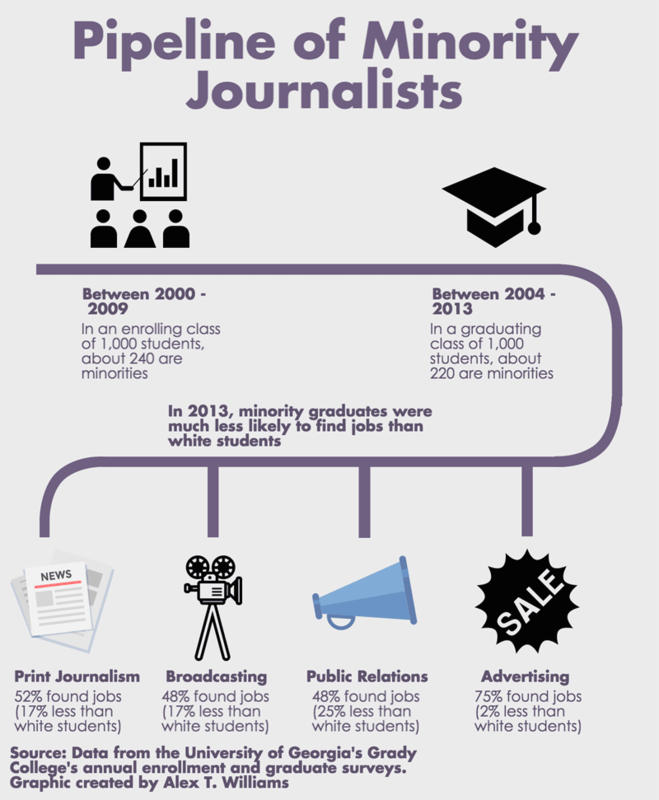

Diversity in the Journalism Classroom
Diversity Divide in Journalism
Journalism is known as one of the least diverse fields of work in America and this could be related to the fact there is a lack of minorities receiving journalism degrees.
Minorites make up about 40% of the U.S. population, but the percentage of minorities employed in daily newspapers is only about 13% as of 2014 according to data from the American Society of News Editors (ASNE) census.
Most journalism and communication degrees are awarded to whites. Out of the about 14,000 journalism degrees awarded in 2017, about 60% were awarded to whites according to Data USA profile on journalism. Hispanic or Latino followed next with less than 14% of degrees.
Similarly, there is a gender divide with white females receiving the most journalism degrees with about 42%, according to Data USA profile on journalism in 2017. White males follow next receiving about 20% of the degrees while female Hispanic or Latinos receive less than half of that.
What is being done to increase the number of minorities majoring in journalism to promote change in the industry?
Interview with Terrence Britt - Philip Merrill College of Journalism Recruitment Coordinator
Do you notice a lack of diversity within prospective and incoming students to the Philip Merrill College of Journalism?
No, I do not find a lack of diversity amongst prospective and incoming students at Merrill. When you think of diversity, we have a vast majority of students of different races, interests, genders, interests, hometown locations, and educational aspirations.
For prospective students, do you notice that there is a majority of one demographic that reaches out more so that another?
Most perspective inquiries come from different demographics. The majority of the inquires come in after I have completed a high school visit. If a student has not heard about the college through a first-hand experience with me, then they are generally white students.
When recruiting students for the Philip Merrill College of Journalism, what steps are taken to ensure that a diverse group of candidates is reached, if any?
When I generate a recruitment strategy, I first look at how many students are in the previous class. From that point, I create a target of how many students we should have in the next class. Next, I create a list of high schools to visit from our most populated feeder schools and then add schools of students who I would like to see in the upcoming class. With my handpicking the high schools to visit, there will never be a lack of outreach to a particular demographic. I generally cover all races, socio-economic statuses, and educational interests.
- Terrence Britt
What is being done to increase and/or promote diversity within the college?
To increase diversity, I am constantly creating relationships with journalism, yearbook, and media teachers in all counties in the state of Maryland. For out-of-state schools, I generate a virtual package for those instructors to share with their students. All of these high schools are picked by their demographic, education standing, and journalistic ability. Beyond high school visits, I ensure that diversity (in all areas) is incorporated in the college's marketing collateral.
Do you believe that more could be done to ensure increased diversity of students within the college?
I think we are in a good place now. Merrill is probably the first place that I have worked where diversity has not been an issue and all of the staff and faculty are working to increase diversity at every level.
What do the Students Think?
The University of Maryland awarded 195 journalism degrees in 2017 according to Data USA profile on journalism. Even though recruitment coordinator Terrence Britt believes that diversity at Merrill is not an issue, some students believe otherwise.
Philip Merrill College of Journalism student Kellina Wanteu notices a lack of diversity in her journalism classes.
“I think in my [Interactive Design and Development] class, I was the only black girl,” Wanteu said. “I talked to [my] other friends of color, and they are normally the only people of color in the [journalism] classroom.”
Only about 8% of journalism degrees were awarded to female African Americans or blacks in 2017 according to Data USA profile on Journalism.
Eunice Sung is also a Philip Merrill College of Journalism student who notices the lack of diversity in the college. She though the college would be more diverse but found it not to be.
Like Wanteu, Sung notices that she is often the only minority student in the room. She says that while she sees other Asians in the journalism building, but none have been in her classes so far.
Sung took a women in journalism class which she said had more diversity then other journalism classes she had taken.
Sung also took News Coverage of Racial Issues but was disappointed in the class. She cited that there were good topics on the syllabus, but they ran out of time covering some topics. This meant they barely spent any time on the Asian community.
Asians only received about 3% of journalism degrees in 2017 according to Data USA profile on journalism
Sung believes it “would be helpful having more classes related to race and diversity.”
- Kellina Wanteu
Wanteu noticed that in journalism introduction classes such as Journalism history and introduction to newswriting and reporting there are more diverse students, but in upper level classes there are less minority students.
“I don’t necessarily feel discriminated against by my skin color, but there aren’t enough people of color in the [journalism] classroom,” Wanteu said.
Wanteu believes an issue is the support given in early classes and thinks that with more support it would increase the diversity of students in the class.
“People who come from different backgrounds and different countries [bring] so much to the table,” Wanteu said.
The Struggle to Find a Job
Not only do many minorities not major in journalism, those who do have a harder time finding jobs.
According to an article by the Columbia Journalism Review using unpublished data from Grady College’s 2013 Graduate Survey, “graduating minorities that specialized in print were 17 percentage points less likely to find a full-time job than non-minorities.”
Even though more women receive journalism degrees, the majority of newsrooms are still dominated by white males. The Women’s Media Center found that only about 40% of the news was credited to female journalists.
Not only is it difficult for minority women to find jobs, they are the ones that are affected more in layoffs more than any other group according to data from the ASNE.
There are signs that the next group of journalists will be more diverse. According to Pew Research Center analysis of U.S. Census Bureau data, “younger newsroom employees show greater racial, ethnic, and gender diversity than their older colleagues.”
The American Press Institute states that diversity is a business and journalism imperative. Programs such as Journalism and Women Symposium and the ASNE Emerging Leaders Institute work towards this goal.
With more initiatives in place to ensure more workplace diversity, it is possible that the next generation of journalists will be the most diverse and continue to grow in numbers.
“When I get out of school [I] hope to be a part of the change of more diversity in journalism newsrooms,” Sung said. “Until diversity in the newsroom becomes more [normalized], [it] will definitely impact diversity in journalists.”
Why don't newsroom diversity initiatives work? Blame journalism culture.
Society of Professional Journalists on Diversity
The Modern Newsroom is Stuck Behind the Gender And Color Line